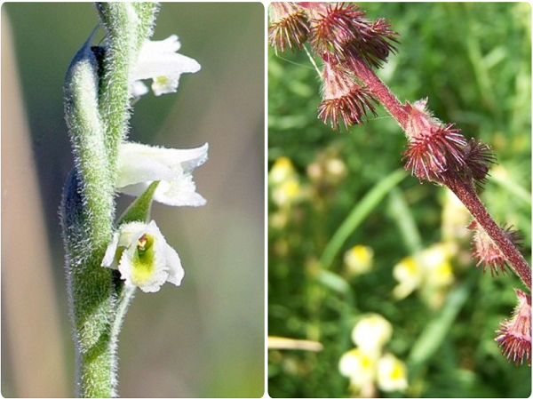
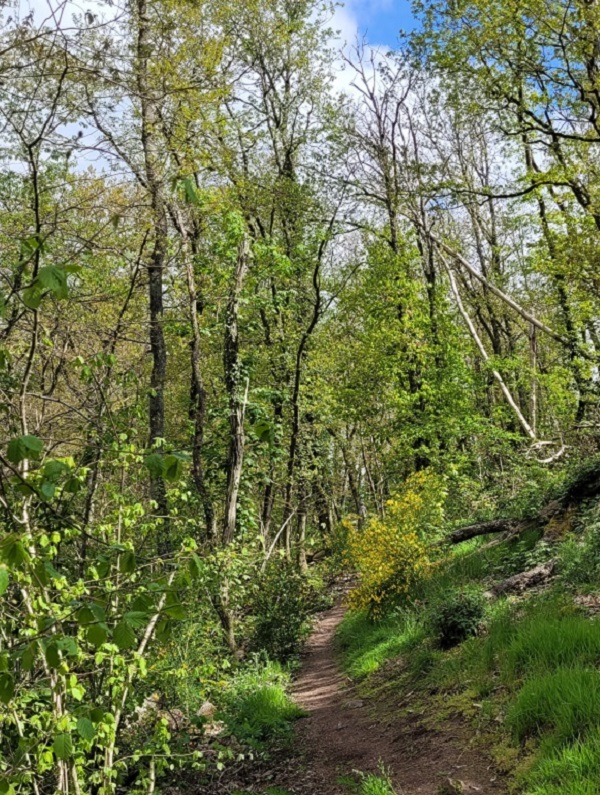
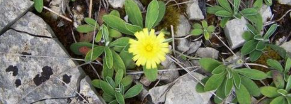
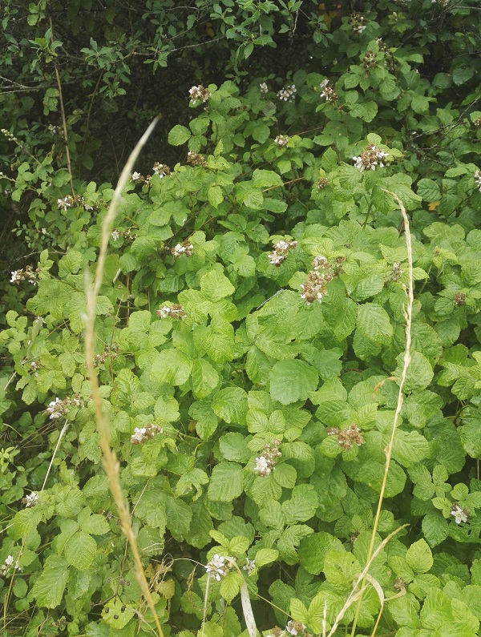
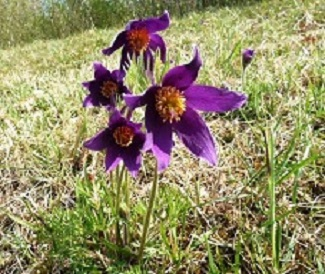
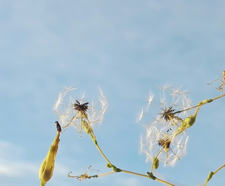
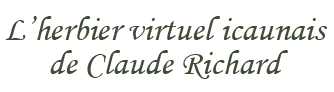
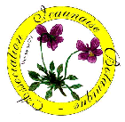
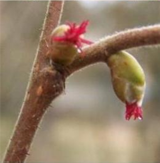

Bienvenue
FLeurs SauVages de l'Yonne et d'ailleurs vous accueille et vous souhaite la bienvenue pour en savoir un peu plus sur les végétaux en général (un si vaste domaine ou chacun peut y trouver ce que bon lui semble), les fleurs sauvages surtout (peu appréciées des agriculteurs et souvent modifiées par les horticulteurs mais remarquées par les poètes), les mousses, les fougères et, pourquoi pas, les lichens qui ne sont pas des végétaux et les insectes, les papillons et toute vie qui les accompagne, parfois minuscule et ne connaissant pas de frontières. Comme les fleurs, ses pages se fanent... mais elles ne cessent de refleurir pour ne pas disparaître. | |
| Rien, dans les pages de FLSVY, n'est donc établi de façon définitive. | |
| Si vous débutez en botanique, de belles découvertes florales et botaniques vous attendent, cachées le long des sentiers et des chemins de l'Yonne, même à la fin de l'été. |
|
 Spiranthes spiralis / Agrimonia eupatoria | |
| ou comme ci-dessous aux mois d'avril et de juin : | |
(Sunny Mornings, Peder B. Helland) | |
 | |
| Afin de permettre à tout un chacun ayant croisé par hasard un végétal d'en savoir un peu plus que son seul nom indiqué par les applications de reconnaissance visuelle pour smartphones, désormais très répandues, le présent herbier en ligne utilise des "fiches" dont voici le mode d'emploi. Eles indiquent, entre autres, l'origine supposée des noms de genre et d'espèce et quelques détails caractéristiques concernant le végétal en question. Mais des erreurs sont possibles qu'un botaniste amateur peut corriger en observant les fleurs peu à peu autrement. | |
Parmi les découvertes évoquées ci-dessus, voici
|
|
 Pilosella officinarum, l'épervière piloselle | |
Ou encore, voici
| |
 Une demoiselle est presque invisible au milieu des feuilles. L'avez-vous vue ? | |
| FLeurs SauVages de l'Yonne et d'ailleurs n'offre pas d'outils aussi puissants que ceux offert par les bases de données existant au sein du GBIF (Système mondial d’information sur la biodiversité). |
|
| Son mode d'emploi est donc très simple | |
| Dans l'Yonne ou ailleurs, les découvertes qui vous attendent peuvent tout simplement se trouver, en toutes saisons, dans les moindres recoins où les plantes, pour croître avant de dépérir silencieusement, se contentent de recevoir et d'absorber la lumière et l’eau. | |
 Pulsatilla vulgaris, l'herbe au vent. |
|
| Voyez-vous ces fleurs ? C'est avec elles que vous allez pouvoir penser autrement. C'est ce qu'aurait un jour écrit DARWIN à son professeur de Botanique et de Minéralogie, J.S. Henslow (1796-1861). |
|
 Lactuca serriola, Courbevoie (Hauts-de-Seine), 7 août 2021. |
|
| Les fleurs de cette scarole sont devenues des petits fruits que les botanistes nomment cypsèles car c'est une fleur de la famille des Asteraceae. | |
| Vous débutez en Botanique ? | |
 (à l'origine des pages qui suivent désormais nommées FLSVY) botaniste AMATEUR passionné, ancien membre de l'Association Icaunaise de Botanique  |
|
| pourrait peut-être vous aider à faire vos premiers pas, sans prétendre bien entendu rivaliser avec Pl@ntNet ni Tela Botanica. La Botanique est en effet un domaine difficile et il est parfois ardu d'y démêler le vrai du faux quand on est botaniste amateur. | |
| La Botanique est également un domaine passionnant où plus on apprend et plus on prend conscience de ses erreurs et de l'immensité de ce qu'on ignore. | |
| Comme l'écrit Alain Corbin dans son ouvrage Terra Incognita : « [...] répétons-le, observer n'est pas comprendre. » |
|
 Corylus avellana, fleurs femelles apétales. |
|
| FLeurs SauVages de l'Yonne et d'ailleurs qui, initialement, vous accueillait ainsi, s'améliorera, nous l'espérons, petit à petit, pour que vous puissiez le trouver dans votre poche au cours de vos balades en chantant, fredonnant ou récitant peut-être des ballades entraînantes comme... |
|
| ... ou pour que vous puissiez vous détendre tout en approfondissant vos connaissances durant vos moments casaniers. | |
| Merci encore de bien vouloir excuser ses faiblesses et ses photos ou images parfois... fanées comme peuvent l'être les fleurs :-), les émoticônes devenues smileys ou emoji et, en espérant que ne se fanera pas | |
| La paix... qui est une fleur | |
 | |